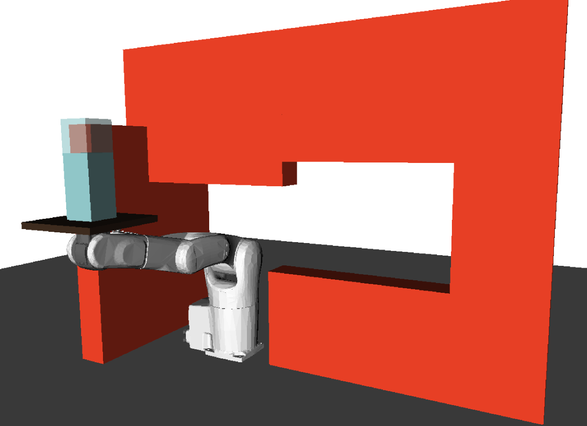

Abstract¶
Path-velocity decomposition is an intuitive yet powerful approach to address the complexity of kinodynamic motion planning. The difficult trajectory planning problem is solved in two separate adn simpler steps: first, find a path in the configuration space that satisfies the geometric constraints (path planning), and second, find a time-parameterization of that path satisfying the kinodynamic constraints. A fundamental requirement is that the path found in the first step should be time-parameterizable. Most existing works fulfill this requirement by enforcing quasi-static constraints in the path planning step, resulting in an important loss in completeness. We propose a method that enables path-velocity decomposition to discover truly dynamic motions, i.e. motions that are not quasi-statically executable. At the heart of the proposed method is a new algorithm — Admissible Velocity Propagation — which, given a path and an interval of reachable velocities at the beginning of that path, computes exactly and efficiently the interval of all the velocities the system can reach after traversing the path while respecting the system kinodynamic constraints. Combining this algorithm with usual sampling-based planners then gives rise to a family of new trajectory planners that can appropriately handle kinodynamic constraints while retaining the advantages associated with path-velocity decomposition. We demonstrate the efficiency of the proposed method on some difficult kinodynamic planning problems, where, in particular, quasi-static methods are guaranteed to fail.

Moving a bottle through a narrow passage with non-zero minimum velocity
Content¶
| Paper | |
| 10.1177/0278364916675419 |
BibTeX¶
@article{pham2016ijrr,
title = {Admissible Velocity Propagation: Beyond Quasi-Static Path Planning for High-Dimensional Robots},
author = {Pham, Quang-Cuong and Caron, St{\'e}phane and Lertkultanon, Puttichai and Nakamura, Yoshihiko},
journal = {International Journal of Robotics Research},
year = {2017},
volume = {36},
number = {1},
pages = {44--67},
publisher = {Sage Publications},
doi = {10.1177/027836491667541},
}
Discussion ¶
Feel free to post a comment by e-mail using the form below. Your e-mail address will not be disclosed.